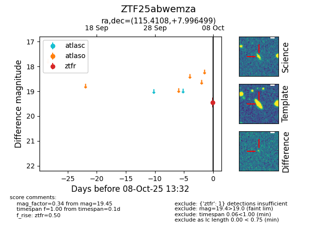

FINK: ZTF25abwemza
Lasair: ZTF25abwemza
ALeRCE: ZTF25abwemza
ZTF25abwemza (ztf,fink)
equatorial (ra, dec) = (115.4108,+7.99650)
galactic (l, b) = (211.4101,+14.77115)

last ztfr=19.45
1 ztfr detections